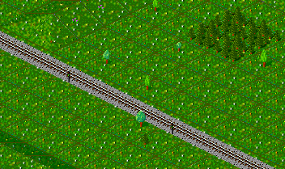
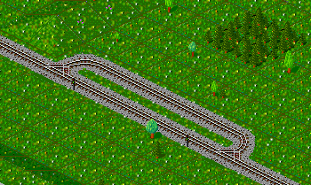
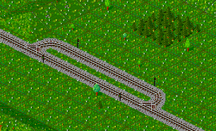

-
In die Strecke, die eine Zweispurinsel erhalten soll,
werden zwei Signale
in der gewünschten Fahrtrichtung eingesetzt. Dies geschieht mit dem
Signalbauwerkzeug.
|

|
-
Nach dem Bau der Signale wird die Zweispurinsel angelegt.
|

|
-
Nun müssen lediglich noch in der Gegenrichtung zwei Signale eingesetzt
werden, und die Zweispurinsel ist fertig.
|

|